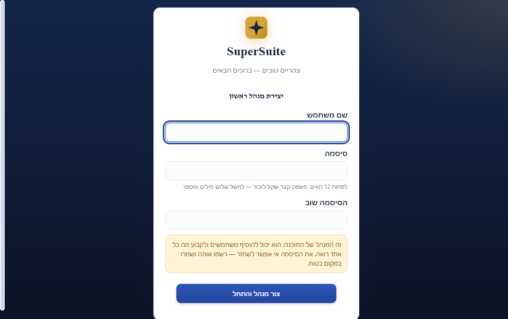
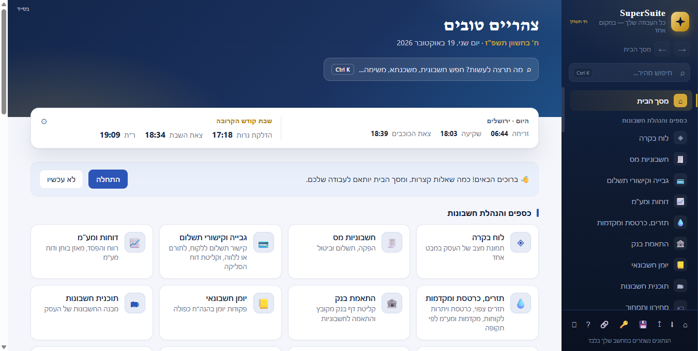
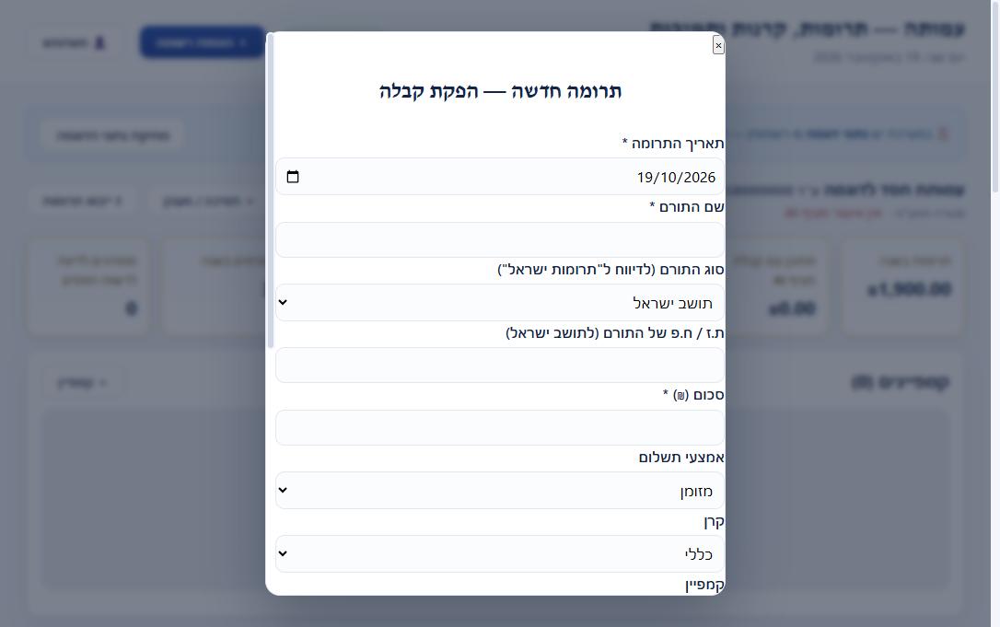
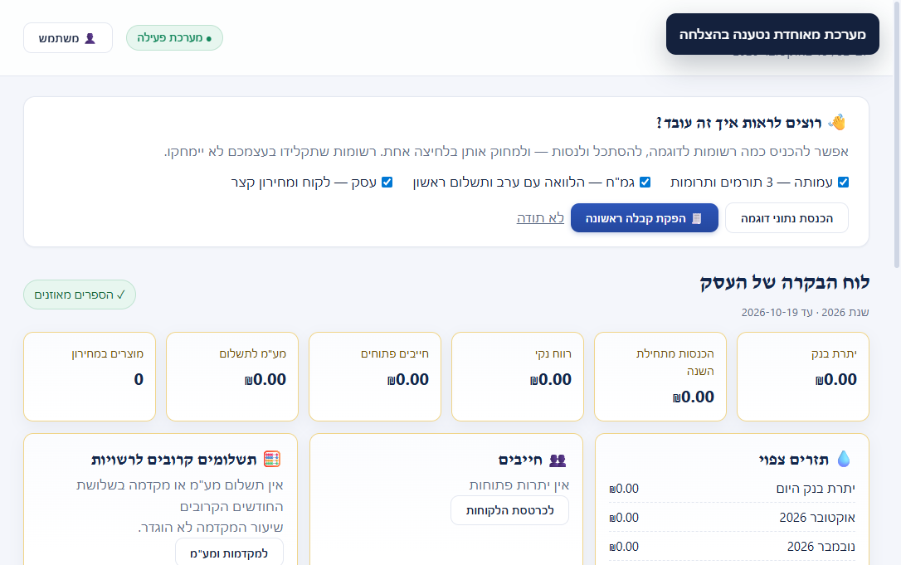
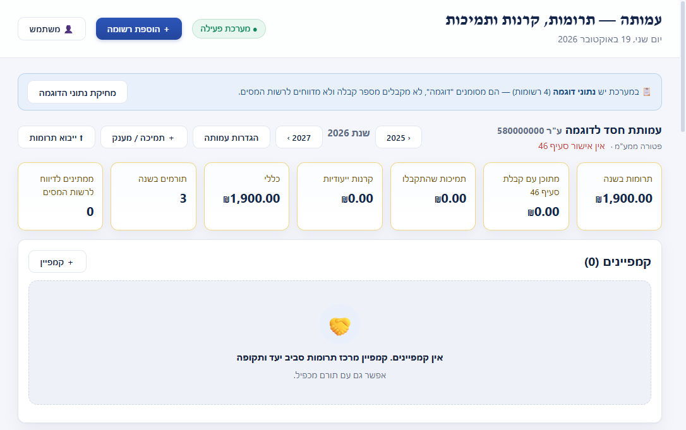
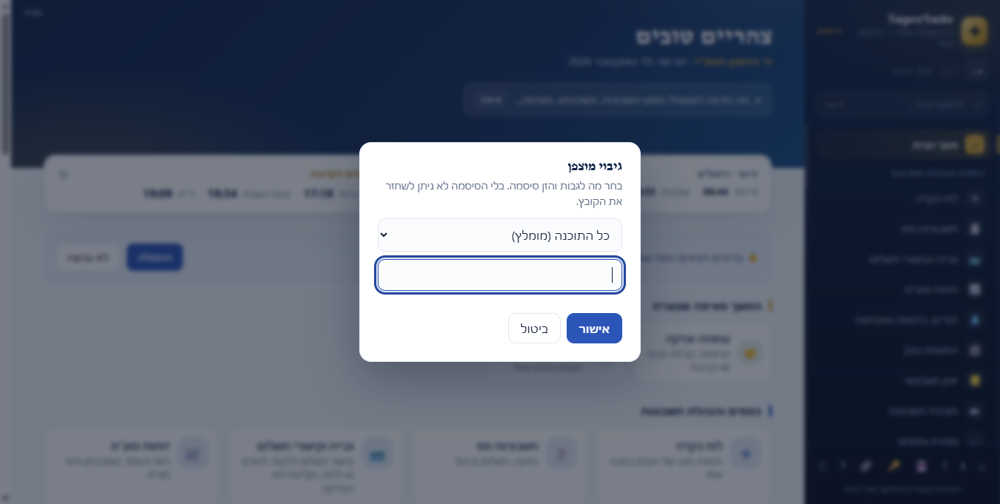

SuperSuite — מדריך למשתמש
מדריך קצר לצעדים הראשונים. אפשר לפתוח אותו בכל רגע מהמדריך המהיר (F1), ולשמור אותו כקובץ PDF.
1. התקנה
- הפעילו את קובץ ההתקנה (SuperSuite-Setup).
- במסך הפתיחה לחצו "הבא".
- קראו את הסכם הרישיון וסמנו "אני מסכים".
- בחרו תיקיית התקנה, או השאירו את מה שמוצע (מומלץ).
- בסיום — סמנו "הפעל את SuperSuite" ולחצו "סיום".
שדרוג מגרסה קודמת: מתקינים את הגרסה החדשה באותה תיקייה. הנתונים נשמרים. גם הסרת התוכנה אינה מוחקת את הנתונים.
2. כניסה ראשונה
בפעם הראשונה שפותחים את המערכת הכלכלית, התוכנה מבקשת ליצור משתמש מנהל: שם משתמש וסיסמה (פעמיים). מכאן ואילך נכנסים עם הפרטים האלה.

שמרו את הסיסמה במקום בטוח. אין דרך לשחזר אותה מבחוץ — מנהל נוסף יכול לאפס סיסמה של משתמש אחר.
3. מסך הבית
בצד ימין — הסרגל עם כל התחומים. במרכז — המסכים שבחרתם, פעולות אחרונות ומצב הגיבוי. אפשר לחפש כל מסך עם Ctrl+K.

4. קבלה ראשונה
- בסרגל בחרו "עמותה".
- בפעם הראשונה — מלאו את פרטי העמותה (שם, מספר עמותה, כתובת).
- לחצו "＋ הוספת רשומה", מלאו את שם התורם, הסכום, התאריך ואמצעי התשלום, ושמרו.
- הקבלה נוצרת עם מספר רץ. אפשר להדפיס אותה או לשמור כ-PDF.

קבלה לפי סעיף 46 — רק אם לעמותה יש אישור בתוקף, ואת מספר האישור רושמים בפרטי העמותה.
5. נתוני דוגמה
בלוח הבקרה אפשר להוסיף נתוני דוגמה כדי להכיר את התוכנה: תורמים ותרומות, הלוואת גמ"ח, מחירון קצר, ונכס עם עסקה ופרויקט יזמי. הם מסומנים "דוגמה", לא מקבלים מספר קבלה ולא מדווחים לשום מקום.


כשמסיימים — לחצו "מחיקת נתוני הדוגמה" בפס שבראש המסך. רק נתוני הדוגמה נמחקים; מה שהזנתם בעצמכם נשאר.
6. משכנתאות ונדל"ן
שלושה מסכים בתחום "משכנתאות ונדל"ן": ייעוץ משכנתאות (תיקי לקוחות של משרד ייעוץ), מעבדת תמהיל, ונדל"ן ותיווך (למתווכים וליזמים).
ייעוץ משכנתאות
- תיק לקוח: "＋ הוספת רשומה" — שם, סכום מבוקש, שווי הנכס ועמלת הייעוץ. כל תיק משויך ליועץ.
- צנרת: לוח עמודות לפי שלב התיק, עם ימים בשלב ותיקים "תקועים".
- אישורים עקרוניים: נשמרים בתיק עם תוקף ועמלות, ומושווים לפי עלות כוללת.
- מסמכים חסרים לפי סוג הלווה, ונוסח מוכן להעתקה ללקוח (התוכנה לא שולחת).
נדל"ן ותיווך
- נכסים ולקוחות: קונים, מוכרים, שוכרים ומשכירים. כפתור ההתאמה מציג נכסים שמתאימים לדרישות הקונה.
- עסקאות: מהצגה ועד חתימה, עם מועדים קרובים ועמלות תיווך מכל צד.
- משכנתא בתוך העסקה: בכרטיס העסקה — "פתח תיק משכנתא". נפתח תיק ייעוץ לקונה, מקושר לעסקה, ובשני המסכים רואים את מצב המשכנתא. עסקה שתלויה במשכנתא, שהחתימה שלה בעוד פחות משבועיים והמשכנתא עוד לא אושרה סופית, מקבלת התראה.
- כדאיות ומס רכישה: תשואה, תזרים והון עצמי. את מדרגות מס הרכישה מקלידים מאתר רשות המסים — אין בתוכנה מדרגות מובנות.
- תזרים יזם: עלויות (קרקע, בנייה, היתרים, מימון) לפי חודשים, מכירות לפי לוח תשלומים של הקונים, ובסוף: יתרה מצטברת, שיא הגירעון, רווח ואחוז רווח.
כל החישובים הם הערכה לפי מה שהוזן, ואינם ייעוץ מחייב. ערכים חוקיים (מס רכישה, כללי בנק ישראל) מסומנים "לא מאומת" עד שמנהל בודק אותם מול המקור.
רוצים לראות איך זה נראה? בנתוני הדוגמה בחרו "נדל"ן ותיווך" — יתווספו נכס, קונה ומוכר, עסקה ופרויקט יזמי.
7. גיבוי ושחזור
התוכנה מגבה לבד פעם ביום, בהצפנה, לתיקייה "SuperSuite-Backups" במסמכים. מומלץ לבחור גם דיסק נייד או תיקייה מגובה.
- גיבוי ידני: כפתור ⬇ בתחתית הסרגל, או Ctrl+Shift+B. בוחרים סיסמה לקובץ.
- שחזור: כפתור ↥ בתחתית הסרגל, או Ctrl+Shift+R. בוחרים את הקובץ ומקלידים את סיסמת הקובץ (או את קוד השחזור).

בלי סיסמת הקובץ אי אפשר לפתוח את הגיבוי — גם לא אנחנו.
גיבוי ידני, שחזור, קוד השחזור ובחירת יעד הגיבוי — למנהל המערכת בלבד. הגיבוי האוטומטי ממשיך לפעול כרגיל.
8. קוד שחזור
הגיבויים האוטומטיים ומסד הנתונים מוצפנים במפתח שנשמר במחשב. אם המחשב מתקלקל או מוחלף — צריך את קוד השחזור כדי לפתוח אותם.
- בתחתית הסרגל לחצו על כפתור המפתח 🔑.
- הדפיסו את הקוד או רשמו אותו, ושמרו במקום בטוח מחוץ למחשב.
- בשחזור במחשב חדש — מקלידים את הקוד במקום סיסמה.
מי שמחזיק את קוד השחזור יכול לפתוח את הגיבויים. אל תשמרו אותו בקובץ על אותו מחשב.
9. רישיון ותקופת ניסיון
מצב הרישיון מופיע במסך "רישוי" במערכת הכלכלית: כרטיס אחד בראש המסך אומר מה המצב ומה לעשות. בתקופת ניסיון כל התחומים פתוחים; בסופה אפשר לצפות בנתונים אך לא לשנות אותם, עד להתקנת רישיון.
להתקנת רישיון: "טעינת קובץ רישיון", או "הדבקת קוד רישיון". פרטי הגרסה והסכם הרישיון — במדריך המהיר (F1) תחת "אודות".
10. מקלדת ונגישות
- Ctrl+1…4 — מעבר בין המודולים.
- Ctrl+K — חיפוש מסך.
- Ctrl+= / Ctrl+- / Ctrl+0 — הגדלה, הקטנה וחזרה לגודל רגיל.
- Tab — מעבר בין כפתורים ושדות; המיקוד מסומן במסגרת בולטת.
- F1 — המדריך המהיר.
11. שאלות נפוצות
- האם התוכנה צריכה אינטרנט?
- לא. הכול עובד במחשב, גם בלי חיבור.
- איפה נשמרים הנתונים?
- במחשב שלכם בלבד, מוצפנים.
- שכחתי את הסיסמה.
- מנהל אחר יכול לאפס אותה במסך המשתמשים. אם אין מנהל נוסף — פנו לספק.
- עברתי מחשב. איך מעבירים את הנתונים?
- מתקינים את התוכנה במחשב החדש, לוחצים על כפתור השחזור ↥ ובוחרים קובץ גיבוי, עם סיסמת הקובץ או קוד השחזור.
- התוכנה הציגה הודעת תקלה.
- אפשר להמשיך לעבוד. כדי לעזור לנו לתקן — במדריך המהיר לחצו "שמירת דוח תקלה" ושלחו את הקובץ לספק. הדוח לא כולל את הנתונים שלכם.
- האם הסרת התוכנה מוחקת נתונים?
- לא. הנתונים והגיבויים נשארים.